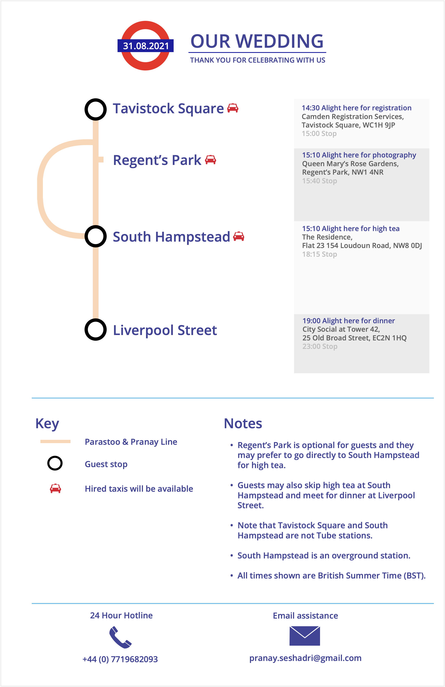

Acrylic painting by Baraneh Masoumi.
Agenda

Google map links to the places above are given below:
Tavistock Square
Regent's Park
South Hampstead
Liverpool Street
Pictures
Will be made available after the wedding.